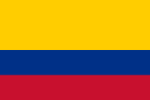
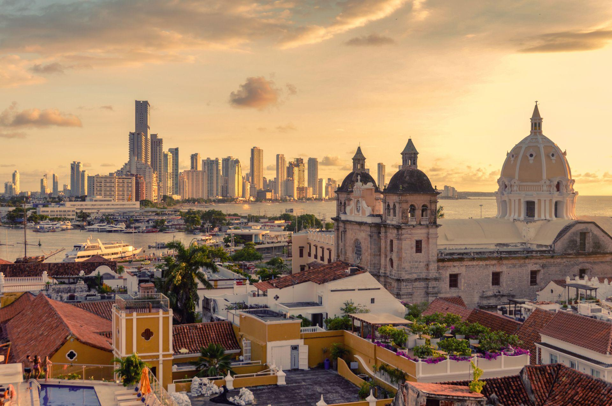

Colombia

To know:
Capital : Bogota.
Population (2018) : 49,648 millions of inhabitants.
Produit Intérieur Brut – PIB (2018) : 330,228 billion of dollars.
Form of the State: Presidential
System with unitary: state
President of the Republic: Gustavo Petro
Vice-President of the Republic: Francia Márquez
Parliament: Congress
Official languages: Spanish
Area : 1 141 748 km2.
Cash : Peso colombien (COP).
The Republic of Colombia (Spanish: Colombia or República de Colombia audio) is a unitary republic in South America comprising 32 departments. The country is located in the northwest of the South American continent; it is bordered to the west by the Pacific Ocean, to the northwest by Panama, to the north by the Caribbean Sea (giving access to the Atlantic Ocean), to the northeast by Venezuela, to the southeast by Brazil, to the south by Peru and to the Southwest by Ecuador. Colombia is the 26th largest country by area and the 4th largest in South America. With more than 51 million inhabitants, Colombia is the 28th most populous country in the world and the 2nd of all Spanish-speaking countries after Mexico. Colombia is a middle power, the 4th largest economy in Latin America, and the 3rd largest in South America. The production of coffee, flowers, emeralds, coal and oil forms the main sector of the economy colombiana.
Culture
Colombia's population is very diverse. It includes Spanish and African descendants and several types of Afro-Hispanic-Indian interbreeding. Ethnic Indians live in southern Colombia.
Indigenous people have long had beliefs about the nature that surrounds them. The Kogi Indians guard the summit of the world's highest coastal range: the Sierra Nevada, located in northeastern Colombia.
According to them, this chain is a magical place because, being at the center of the universe, it is connected by invisible black lines to other sacred places in Colombia.
Religion
Catholicism is the dominant religion in Colombia. In 2006, nearly 95% of Colombians were considered Catholic. Religion occupies a special place in the lives of the latter. It is also taken into account in several public areas of their life, education or social life, which may partly explain why individuals or groups declare themselves Catholic.
Food
Colombian food is mainly made up of meat, fish, corn, rice, kidney beans, yuca and potatoes of a wide variety. The basis for food is corn. "arepas" are made from this cereal and hold an important place in Colombian gastronomy. Among the typical dishes that are widely eaten is "sancocho" in the Caribbean region, Ajiaco in the center of the country, arepas, tamales, plantains called "plátanos" and potatoes that are served fried or cooked in different ways. Colombians like to mix sweet and savory flavors.
